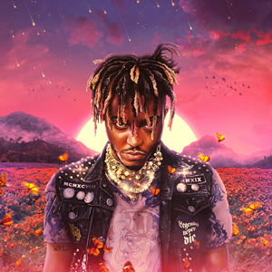
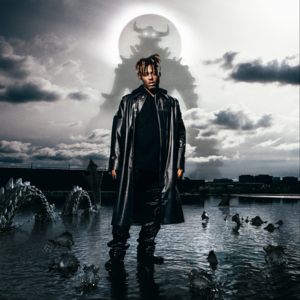

playlist
Albums
- Juice WRLD - Legende never die 
- Juice WRLD - Goodbye & Good Riddance
- Juice WRLD - WRLD on drugs
- Juice WRLD - Fighting Demons 


Pukkelpop is een jaarlijks terugkerend Belgisch popmuziekfestival aan de Kempische Steenweg in Kiewit, Hasselt. Het festival vindt gewoonlijk plaats in de tweede helft van augustus en duurt 4 dagen. Het festival wordt georganiseerd door The Factory vzw van festivalorganisator en ex-politicus Chokri Mahassine.Pukkelpop kiest bewust voor een progressieve en gevarieerde muziek- en randprogrammering.
Terug naar boven.Rock Werchter is een pop- en rockfestival dat elk jaar plaatsvindt in het dorpje Werchter, een deelgemeente van het Vlaams-Brabantse Rotselaar. Het Belgische muziekfestival vindt plaats in het laatste weekend van juni of het eerste van juli. Tot 1999 ging het om een dubbelfestival (Torhout-Werchter) dat jaarlijks plaatsvond en waarbij enkele edities zowel in Werchter als Torhout werden gehouden. De benaming "TW" is nog terug te vinden in de naam TW Classic, een ander muziekfestival dat enkele weken voor of na Rock Werchter plaatsvindt op dezelfde locatie. Met 88.000 bezoekers per dag in 2022 is Rock Werchter het grootste rock/popfestival van België.
Terug naar bovenTomorrowland is een grootschalig Belgisch outdoor dance-evenement in De Schorre in Boom georganiseerd door WEAREONE.world, een onderneming van de broers Beers en tot eind 2013 een joint venture met het Nederlandse bedrijf ID&T. Na de overname van ID&T door het Amerikaanse bedrijf SFX kochten de gebroeders Beers in 2013 zelf de aandelen van hun voormalige partner op waarmee ze zelf enige eigenaar werden van de organisatie. Het evenement vindt sinds 2005 eenmaal per jaar in de zomer plaats op het domein De Schorre. Sinds 2017 zijn er twee weekenden na elkaar. In 2012 werd Tomorrowland verkozen tot beste dancefestival ter wereld.
terug naar bovenGraspop Metal Meeting (ook kortweg Graspop of GMM(xx) genoemd) is een jaarlijks meerdaags metalfestival in Dessel, in de Belgische provincie Antwerpen. In 2022 trok het festival 220.000 bezoekers, waarmee het het vorig record van 2019 van 200.000 bezoekers verbrak. Sinds 2011 is het een vierdaags festival dat, behoudens enkele uitzonderingen, telkens in het voorlaatste weekend van juni plaatsvindt. Het valt meestal samen met het Franse metalfestival Hellfest.
terug naar bovenHet Dour Festival of kortweg Dour is een vijfdaags muziekfestival dat zichzelf de naam van 'European Alternative Music Event' geeft. Het vindt sinds 1988 ieder jaar plaats bij het Waalse dorp Dour.
terug naar boven